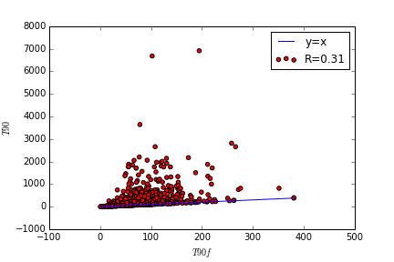
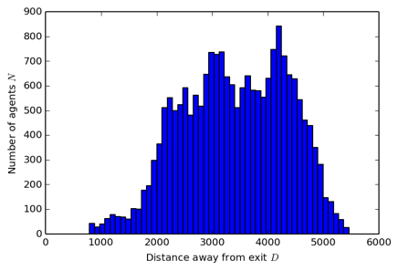
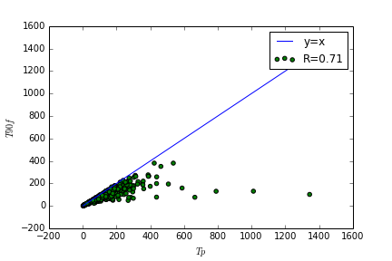
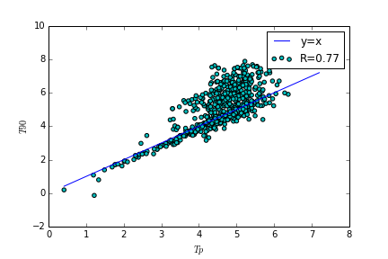
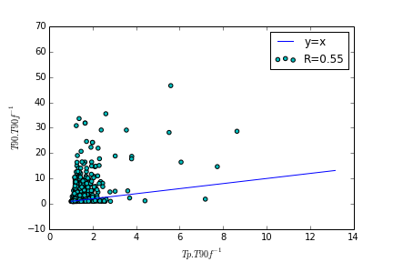

How well does population distribution predict evacuation time?
March 10, 2015
Previously, we tried to predict 90th percentile evacuation time $T_{90}$ determined from ABM simulation using 90th percentile free flow clearance time $T90f$. Bigger the city, greater we can expect $T90f$ to be since it would take longer to traverse. Plotting $T90f$ vs $T90$ produces the figure below. $T90f$ under predicts $T90$ with a poor fit ($R=0.31$) but it is clear that $T90$ is never less than $T90f$!

Since that did not work out too well, I attempt to predict $T90$ using the knowledge of how the population is distributed distance $D$ from the exit. Imagine that each rectangular block in the histogram below is a horde of agent $N$ located distance $D$ away from the exit.

Dividing each block of $N$ by width $W$ of the exit gives us the population per metre width leaving a catchment area. Each population block is of an equal length which we shall call $L$. In this analysis, I have used a granularity of $L$=100m.
We can compute the density $K$ using:
$ K = \frac{N}{WL} $
From this, we obtain the velocity $V$ which has the following relationship with density (Weidmann 1993):

This allows us to calculate the predictive time $Tp$ by doing:
$ Tp = \frac{L}{V} $
If we plot $Tp$ against $T90$, we get:

The fit is much better ($R=0.71$) in this case. It is even 2x as good a predictor as $T90f$ (R=0.31). $Tp$ never exceeds $T90f$ and seems to be closely related to it.
However, what if we plot $Tp$ against $T90f$?

Even better ($R=0.77$)!
Every city is of a different size. What if we normalise $T90$ and $Tp$ by $T90f$?

For now, normalised $Tp$ seems to under predict normalised $T90$ with a modest fit ($R=0.55$).
Is there anything else that can be done to refine the predictive power of $Tp$? We shall see.